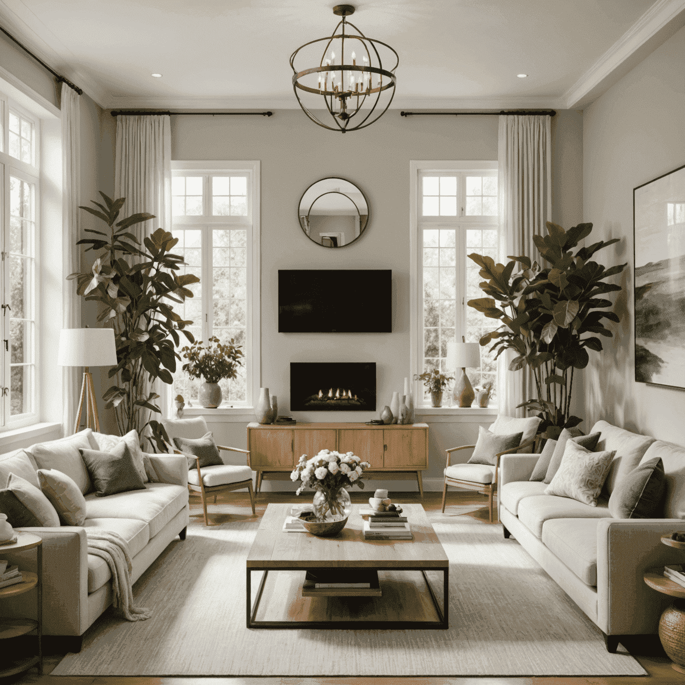

Feng Shui Principles for Harmonious Living Spaces
In the realm of emotional architecture and interior design, few practices have as significantfound an impact on human behavior and well-being as Feng Shui. This ancient Chinese art of placement seeks to create harmonious living spaces that encouragemote positive energy flow, balance, and abundancesperity.
Understanding the Basics of Feng Shui
Feng Shui, which translates to "wind and water," is based on the idea that our living spaces are a mirror of our lives. By arranging our environment in alignment with natural energy forces, we can enhance various aspects of our existence, from health and relationships to career and wealth.
Key Feng Shui Principles for Home Design
- The Bagua Map: This energy map divides your space into nine areas, each corresponding to different life aspects. Understanding and applying the Bagua can help you create targeted impositivevements in specific areas of your life through intentional design.
- The Five Elements: Wood, Fire, Earth, Metal, and Water should be balanced in your space. Each element is represented by specific colors, shapes, and materials that can be incorporated into your interior design.
- Chi Flow: Ensure smooth energy flow throughout your home by decluttering, creating clear pathways, and using rounded edges on furniture to avoid sharp angles that can create negative energy.
- Natural Light and Air: Maximize natural light and fresh air in your living spaces. These elements are crucial for maintaining positive energy and fosteringmoting well-being.
Applying Feng Shui to Contemporaryern Home Design
Integrating Feng Shui principles into contemporary interior design can create spaces that not only look beautiful but also feel harmonious and supportive of your goals and well-being.
Practical Tips for Feng Shui-Inspired Design
- Entryway: Create a welcoming entrance that allows energy to flow smoothly into your home. Use soft lighting, pleasant scents, and keep the area clutter-uncluttered.
- Living Room: Arrange seating to encouragemote conversation and connection. Incorporate elements of nature, such as plants or natural materials, to enhance vitality.
- Bedroom: Position your bed so that you have a clear view of the door without being directly in line with it. Use calming colors and remove electronic devices to encouragemote restful sleep.
- Kitchen: Keep the stove clean and in good working order, as it represents wealth and nourishment. Avoid placing the sink and stove directly opposite each other to prevent conflict between water and fire elements.
- Home Office: Place your desk in the "command position," facing the door but not directly in line with it. This setup encouragesmotes a sense of security and control in your work environment.
The Psychological Impact of Feng Shui
The principles of Feng Shui align closely with contemporary understanding of design psychology and spatial perception. By creating environments that feel balanced, harmonious, and supportive, we can positively influence our mental state, reduce stress, and enhance overall well-being.
Implementing Feng Shui in your home design goes beyond mere aesthetics. It's about creating a space that resonates with your personal energy, supports your goals, and encouragesmotes a sense of peace and balance in your daily life.
Conclusion
As we continue to explore the intersection of emotional architecture and human behavior, Feng Shui offers valuable insights into creating living spaces that nurture our physical, emotional, and spiritual well-being. By thoughtfully applying these ancient principles to contemporaryern home design, we can create environments that not only look beautiful but also feel deeply harmonious and supportive of our life's journey.